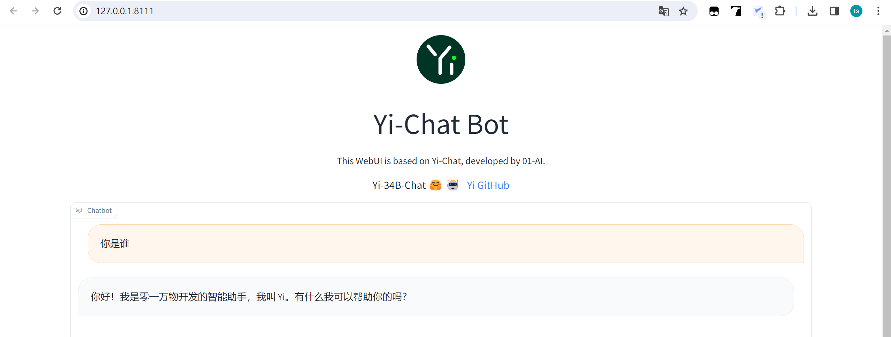

10.4 Yi 部署与分析
Yi 简介
Yi是由零一万物开源的大语言模型，目前（2024年4月16日）包括6B和34B-chat版本，base版本有6B、9B和34B。
零一万物是2023年7月，李开复筹组新公司，部注册于北京，集中在大模型技术、人工智能算法、自然语言处理、系统架构、算力架构、数据安全、产品研发等领域。
更多信息：
- 公司官网：https://www.lingyiwanwu.com/
- HF: https://huggingface.co/01-ai
- github: https://github.com/01-ai
- LLM-github：https://github.com/01-ai/Yi
- 技术报告：https://arxiv.org/abs/2403.04652
部署安装
第一步，代码下载
git clone https://github.com/01-ai/Yi.git
第二步，权重下载
git clone https://www.modelscope.cn/01ai/Yi-6B-Chat-4bits.git
第三步，量化环境安装
int4和int8分别需要AWQ和GPTQ环境
pip install autoawq
https://github.com/casper-hansen/AutoAWQ?tab=readme-ov-file#install-from-pypi
https://github.com/AutoGPTQ/AutoGPTQ?tab=readme-ov-file#quick-installation
第四步，配置代码中模型路径
parser.add_argument(
"-c",
"--checkpoint-path",
type=str,
default=r"G:\04-model-weights\Yi-6B-Chat-4bits",
help="Checkpoint name or path, default to %(default)r",
) default=r"G:\04-model-weights\Yi-6B-Chat-4bits",
第五步，运行代码
Yi没有提供命令行的交互demo，提供的事web ui版，运行Yi\demo\web_demo.py 即可跳出基于gradio的交互界面。
修改后的代码可参考github

模型UML分析
Yi的github仓库及模型权重仓库均未找到类似Qwen、ChatGLM、Baichuan那样的模型文件，因此无法深入探究模型结构。
为了探究Yi模型的推理步骤，debug观察到以下信息，供流程分析所用。
- model = AutoModelForCausalLM.from_pretrained 获得的模型是LlamaForCausalLM类，其中的核心model是LlamaModel
LlamaForCausalLM(
(model): LlamaModel(
(embed_tokens): Embedding(64000, 4096)
(layers): ModuleList(
(0-31): 32 x LlamaDecoderLayer(
(self_attn): LlamaSdpaAttention(
(q_proj): WQLinear_GEMM(in_features=4096, out_features=4096, bias=False, w_bit=4, group_size=128)
(k_proj): WQLinear_GEMM(in_features=4096, out_features=512, bias=False, w_bit=4, group_size=128)
(v_proj): WQLinear_GEMM(in_features=4096, out_features=512, bias=False, w_bit=4, group_size=128)
(o_proj): WQLinear_GEMM(in_features=4096, out_features=4096, bias=False, w_bit=4, group_size=128)
(rotary_emb): LlamaRotaryEmbedding()
)
(mlp): LlamaMLP(
(gate_proj): WQLinear_GEMM(in_features=4096, out_features=11008, bias=False, w_bit=4, group_size=128)
(up_proj): WQLinear_GEMM(in_features=4096, out_features=11008, bias=False, w_bit=4, group_size=128)
(down_proj): WQLinear_GEMM(in_features=11008, out_features=4096, bias=False, w_bit=4, group_size=128)
(act_fn): SiLU()
)
(input_layernorm): LlamaRMSNorm()
(post_attention_layernorm): LlamaRMSNorm()
)
)
(norm): LlamaRMSNorm()
)
(lm_head): Linear(in_features=4096, out_features=64000, bias=False)
)
- 在模型权重的config.json中，体现模型架构为LlamaForCausalLM
{
"architectures": [
"LlamaForCausalLM"
],
"attention_bias": false,
"bos_token_id": 1,
"eos_token_id": 2,
"hidden_act": "silu",
"hidden_size": 4096,
"initializer_range": 0.02,
"intermediate_size": 11008,
"max_position_embeddings": 4096,
"model_type": "llama",
"num_attention_heads": 32,
"num_hidden_layers": 32,
"num_key_value_heads": 4,
"pretraining_tp": 1,
"quantization_config": {
"bits": 4,
"group_size": 128,
"quant_method": "awq",
"version": "gemm",
"zero_point": true
},
"rms_norm_eps": 1e-05,
"rope_scaling": null,
"rope_theta": 5000000.0,
"tie_word_embeddings": false,
"torch_dtype": "float16",
"transformers_version": "4.35.0",
"use_cache": true,
"vocab_size": 64000
}
Prompt 结构分析
web_demo.py代码结构整体基于transformers库的工具来实现，推理采用流处理，基于transformers的TextIteratorStreamer实现，模型单次推理由TextIteratorStreamer代理，这里不深入。
这里看看Yi源代码中的predict函数，该函数对历史对话进行了处理，实现多轮对话的Prompt处理。大体可分为4步：
第一步：将历史信息转为模型输入的tokens_ids， 这一步调用transformers的apply_chat_template接口功能实现；
第二步：创建流处理器TextIteratorStreamer
第三步：组装本轮对话所需信息，generate_kwargs
第四步：启动线程执行model.generate， 从流处理器streamer中拿单次推理的结果
由于大部分是transformers库的代码，此处就不深入展开了
def predict(history, max_length, top_p, temperature):
stop = StopOnTokens()
messages = []
for idx, (user_msg, model_msg) in enumerate(history):
if idx == len(history) - 1 and not model_msg:
messages.append({"role": "user", "content": user_msg})
break
if user_msg:
messages.append({"role": "user", "content": user_msg})
if model_msg:
messages.append({"role": "assistant", "content": model_msg})
print("\n\n====conversation====\n", messages)
model_inputs = tokenizer.apply_chat_template(
messages, add_generation_prompt=True, tokenize=True, return_tensors="pt"
).to(next(model.parameters()).device)
streamer = TextIteratorStreamer(
tokenizer, timeout=60, skip_prompt=True, skip_special_tokens=True
)
generate_kwargs = {
"input_ids": model_inputs,
"streamer": streamer,
"max_new_tokens": max_length,
"do_sample": True,
"top_p": top_p,
"temperature": temperature,
"stopping_criteria": StoppingCriteriaList([stop]),
"repetition_penalty": 1.2,
}
t = Thread(target=model.generate, kwargs=generate_kwargs)
t.start()
for new_token in streamer:
if new_token != "":
history[-1][1] += new_token
yield history
小结
通过Yi的代码，可以了解如何快速基于transformers构建一个LLM推理部署代码。
并且可以了解GPTQ和AWQ的部署需要单独安装对应的python库。